DWS - 2. unitatea - Kontrol egiturak¶
Sarrera¶
- Kontrol-egiturek programaren exekuzio-fluxua kontrolatzen dute
- PHP-n kontrol-egitura nagusiak:
- Baldintzazkoak:
if,else,elseif,switch - Begiztak:
for,while,do-while,foreach - Beste batzuk:
break,continue,goto
Baldintzazko egiturak¶
If-else adierazpena¶
<?php
$adina = 18;
if ($adina >= 18) {
echo "Adin nagusikoa zara";
} else {
echo "Adin txikikoa zara";
}
?>
Elseif erabiliz¶
<?php
$nota = 7.5;
if ($nota >= 9) {
echo "Bikain!";
} elseif ($nota >= 7) {
echo "Oso ondo!";
} elseif ($nota >= 5) {
echo "Ondo!";
} else {
echo "Hurrengo bidean hobeto!";
}
?>
Ariketa 7: Adina konprobatu
- Eginda dut
Sortu PHP script bat ariketa7.php izenekoa, eta idatzi kodea honako funtzionalitateekin:
- Sortu aldagai bat
$adinaizenekoa - Erabili
if-elseegitura adina 18 baino handiagoa den konprobatzeko -
Erakutsi mezu egokia:
- 18 edo gehiago bada: "Pasa zaitezke"
- Bestela: "Ondino adingabekoa zara, ezin zara pasatu"
Adibidea:
Sartu zure adina: 20 - Mezua: Pasa zaitezke
Ariketa 8: Zenbakiaren balioa
- Eginda dut
Sortu PHP script bat ariketa8.php izenekoa, eta idatzi kodea honako funtzionalitateekin:
- Sortu aldagai bat
$zenbakiaizenekoa - Erabili
if-elseegitura zenbakia 0 eta 10 artean dagoen konprobatzeko - Erakutsi mezu egokia:
- 0-10 artean badago: "Zenbakia X da" (non X sartu den zenbakia den)
- Bestela: "Zenbakia ez dago 0 eta 10en artean"
Adibideak:
* Zenbakia: 5
Mezua: - Zenbakia 5 da
* Zenbakia: 15
Mezua: - Zenbakia ez dago 0 eta 10en artean
Switch egitura¶
Switch egitura balio bat hainbat aukeratatik konparatzeko erabiltzen da.
<?php
$eguna = date("N"); // 1 (astelehena) - 7 (igandea)
switch ($eguna) {
case 1:
echo "Astelehena";
break;
case 2:
echo "Asteartea";
break;
case 3:
echo "Asteazkena";
break;
case 4:
echo "Osteguna";
break;
case 5:
echo "Ostirala";
break;
default:
echo "Asteburua!";
}
?>
Ohar garrantzitsuak
breakerabili behar da kasu bakoitzaren amaierandefaultaukerakoa da eta kasurik bat ere ez denean exekutatuko da- Kasuak konstante sinpleak izan behar dute (ez dira onartzen adierazpen konplexuak)
Ariketa 9: Zenbakia asmatu (Switch erabiliz)
- Eginda dut
Bihurtu hurrengo kodea if-else egitura duena switch egitura erabiliz:
$aldagaia = 2;
if ($aldagaia == 1) {
echo '$aldagaia berdin 1.';
} else if ($aldagaia == 2) {
echo '$aldagaia berdin 2.';
} elseif ($aldagaia == 3) {
echo '$aldagaia berdin 3.';
} else {
echo '$aldagaia ez da ez 1, ez 2 ezta 3.';
}
Operadore logikoak¶
Operadore logiko nagusiak:¶
- OR (
||) - Baldintza bat behintzat betetzen denean
php
if ($izena == "Garazi" || $abizen1 == "Olabarria") {
// Kodea exekutatuko da baldintzetako bat betetzen bada
}
- AND (
&&) - Baldintza guztiak bete behar direnean
php
if ($adina >= 18 && $baimena == true) {
// Kodea exekutatuko da baldintza guztiak betetzen badira
}
- NOT (
!) - Emaitza alderantzikatzeko
php
if (!empty($erabiltzailea)) {
// Kodea exekutatuko da $erabiltzailea ez bada hutsik
}
Ariketa 10: Sarbidea konprobatu
- Eginda dut
Sortu PHP script bat ariketa11.php izenekoa, eta idatzi kodea honako funtzionalitateekin:
- Sortu hiru aldagai:
$izena: erabiltzailearen izena$abizen1: lehen abizena$abizen2: bigarren abizena
- Erabili operadore logikoak hurrengo baldintzak egiaztatzeko:
- Izena "Garazi" den
- Edo abizenak "Olabarria Iriondo" diren
- Baldintza betetzen bada, erakutsi "Ongi etorri $izena $abizen1 $abizen2!"
- Bestela, erakutsi "Ez du sarbiderik"
Adibidea 1:
Izena: Garazi
Abizena 1: Perez
Abizena 2: Lopez
Mezua: Ongi etorri Garazi Perez Lopez!
Adibidea 2:
Izena: Aitor
Abizena 1: Olabarria
Abizena 2: Iriondo
Mezua: Ongi etorri Aitor Olabarria Iriondo!
Adibidea 3:
Izena: Jon
Abizena 1: Garcia
Abizena 2: Lopez
Mezua: Ez du sarbiderik
Iterazioak (Begiztak)¶
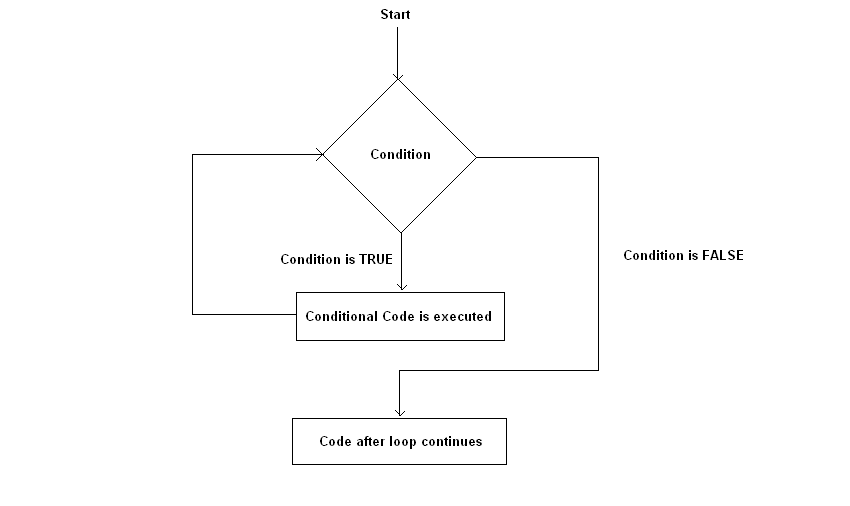
For begizta¶
Kontagailu baten balioaren arabera, zehaztutako kode.lerroak exekutatuko dira:
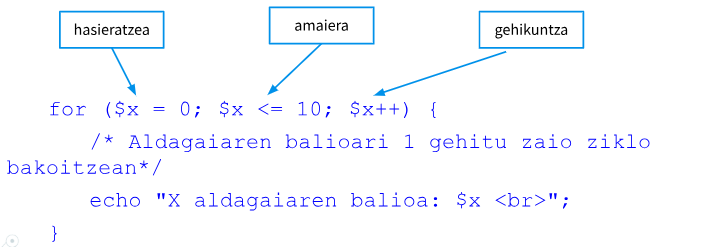
<?php
// 1tik 10era zenbakiak inprimatu
for ($i = 1; $i <= 10; $i++) {
echo "Zenbakia: $i<br>";
}
?>
Bukle infinituak
Bukle infinitu bat gertatzen da begiztaren baldintza inoiz betetzen ez denean.
Adibidez:
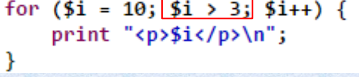
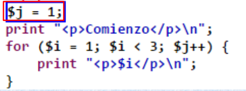
Bukle anidatuak¶
- Bukle anidatua dela esaten dugu, bukle bat beste bloke baten sententzia kodean dagoenean.
- Bukleek edozein maila izan dezakete, bat beste baten barruan, horren barruan beste bat etab...
- Barruko bukleari
barne bukleaderitzogu. Eta kapnkoarikanpo buklea. - Kontuz ibili barneko begiztako aldagaiekin, hoberena aldagai izen ezberdinak erabiltzea da:
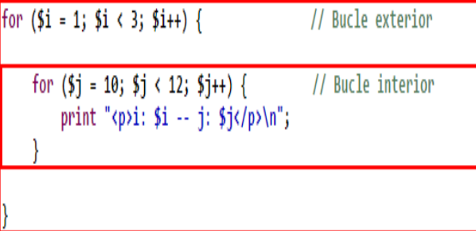
Ariketa 11: Biderketa taula (for)
- Eginda dut
Idatzi programa bat honako funtzionalitateekin:
- Sortu aldagai bat
$zenbakiaeta esleitu balio bat (adibidez, 5) - FOR begizta erabiliz, biderketa taula erakutsi formatu honetan:
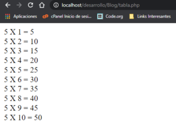
Ariketa 12: Taula sortzea (for anidatuak)
- Eginda dut
FOR anidatuak erabiliz ondorengo taula moduko bat sortu. Horretarako html kodea sartu beharko duzu
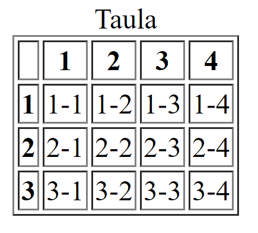
Ariketa 13: Zenbaki bikoitiak
- Eginda dut
Sortu programa bat 5 eta 50 bitarteko zenbaki bikoitiak koma batekin bananduta erakutsiko duena. Azken koma ez erakutsi.
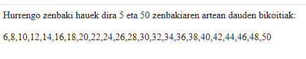
While begizta¶
- Baldintza bat betetzen den bitartean, zehaztutako kode-lerroak exekutatuko dira.
- Aldagia aldatzen joan behar du bukle infinito baten sartu ez gaitezen.
<?php
$kontagailua = 1;
while ($kontagailua <= 5) {
$kontagailua++;
}
echo "Zenbakia: $kontagailua<br>"; // Irteera: Zenbakia: 6
?>
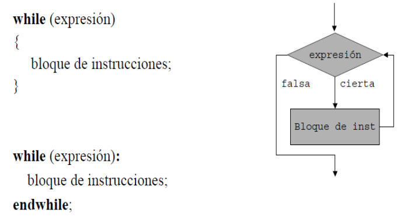
Ariketa 14: Biderketa taula (while)
- Eginda dut
Berridatzi aurreko biderketa taula while begizta erabiliz.

Do-While begizta¶
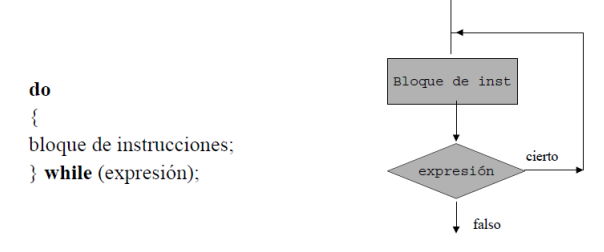
Aurrekoaren antzeko begizta da; kasu honetan, ordea, bukaeran ebaluatzen da adierazpena; beraz, begiztaren sententzia edo sententzia multzoa behintzat behin exekutatuko da.
<?php
$kontagailua = 1;
do {
echo "Zenbakia: $kontagailua<br>";
$kontagailua++;
} while ($kontagailua <= 5);
// Irteera: Zenbakia: 1 Zenbakia: 2 Zenbakia: 3 Zenbakia: 4 Zenbakia: 5
?>
Ariketa 15: Do-while erabiliz
- Eginda dut
Idatzi programa bat eta erakutsi 0tik 10erako zenbakiak do-while erabiliz.
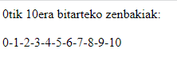
Foreach begizta (array-ekin)¶
Foreach iterazioa array-ekin erabili ohi da. Iterazioak array-a zeharkatuko du eta elementu bat aurkiten duen bakoitzean, zehaztutako kode-lerroak exekutatuko ditu.
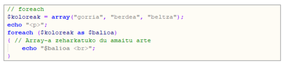
Array asoziatiboentzat, beste modu hau erabiliko genuke, klabea eta balioa atera ahal izateko:
<?php
$ikasle = [
"izena" => "Ane",
"abizena" => "Garcia",
"adina" => 22,
"email" => "ane.garcia@ikasle.eus",
"notak" => [7.5, 8.0, 9.2, 7.8]
];
foreach ($ikasle as $gakoa => $balioa) {
echo "$gakoa: $balioa<br>";
}
?>
**Irteera:**
izena: Ane
abizena: Garcia
adina: 22
email: ane.garcia@ikasle.eus
notak: 7.5, 8, 9.2, 7.8
Adibidea
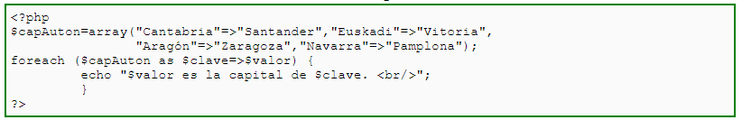
Irteera:
-
Santander es la capital de Cantabria.
-
Vitoria es la capital de Euskadi.
-
Zaragoza es la capital de Aragón.
-
Pamplona es la capital de NAvarra.
KONTUZ!
foreach-ek arrayekin bakarrik funtzionatzen du, eta errorea itzuliko du beste datu mota batekin erabiltzen saiatuz gero.
Ariketa 16: Zenbakia asmatu
-
Eginda dut
Sortu programa bat, 1 eta 10 bitarteko zenbaki sekretu bat asmatzeko joko txiki bat simulatzen duena. Zereginak:
- Aurrez definitutako zenbaki sekretu bat izango du (adibidez, 7).
- Bukle bat sortuko dugu zenbakia asmatzeko saiakerak simulatzeko, gehienez 5 saiakerekin.
- Saio bakoitzeko, programak "asmatu" egingo du zenbaki bat (ausaz sortutako zenbaki bat erabiliz). Horretarako rand funtzioa erabiliko dugu.
- Asmatutako zenbakia zenbaki sekretuarekin bat badator, "Zuzen asmatu duzu, zenbakia X zen!" erakusten du eta buklea geldituko da.
- Bat ez badator, hau bistaratuko du: " Saiakera okerra, berriro saiatzen...".
- Buklea bukatzean ez baldin badu asmatu, "Ez duzu zenbakia asmatu 5 saiakeretan. Zenbaki sekretua XX zen.” erakusten du.
-
Adibidez horrelako zeozer erakutsiko du programak:
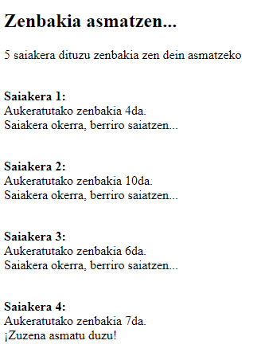